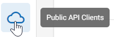
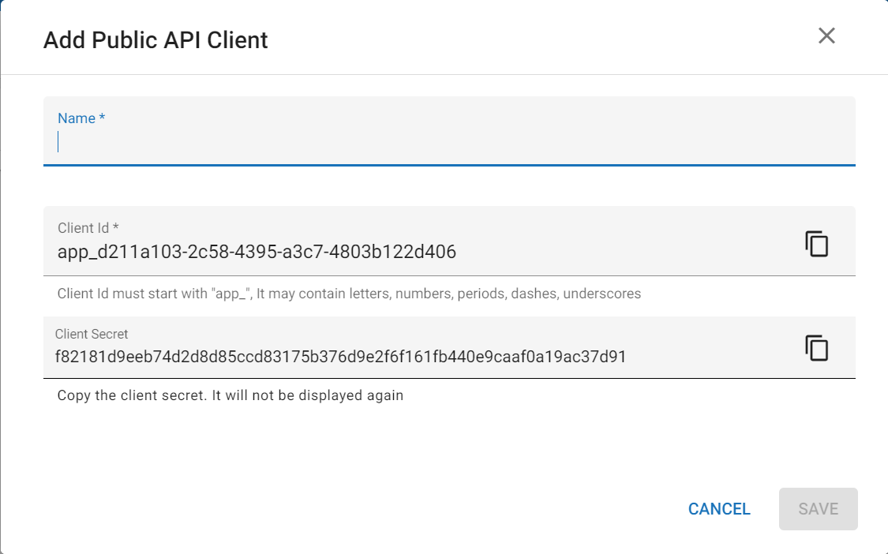

Note: Only users in the SuperAdmin group have permissions to add new API Clients.
To add new API Clients:
|
|
Note: Only users in the SuperAdmin group have permissions to add new API Clients. |
The System Manager opens. In the left pane of the System Manager, click Public API Clients.

Click the Add API Client button at the top of the screen to open the Add Public API Client dialog.

Related Topics